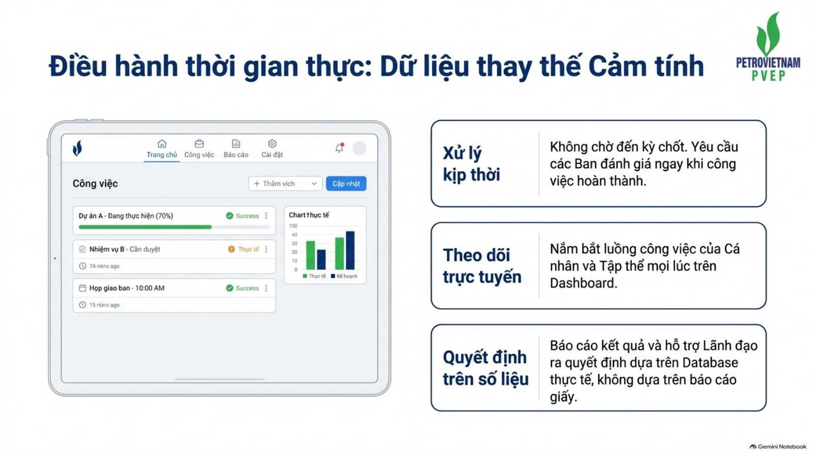
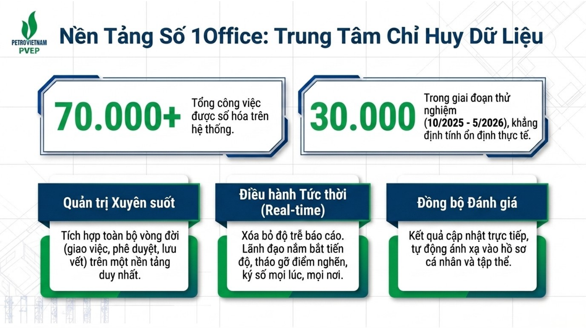

08 · Thực hiện trên nền tảng số 1Office
Hệ thống là nơi ghi nhận quá trình, không chỉ là nơi nhập kết quả cuối kỳ
Người dùng cần cập nhật công việc trong quá trình thực hiện. Cấp quản lý theo dõi trên dữ liệu thời gian thực và thực hiện đánh giá khi công việc hoàn thành, thay vì dồn toàn bộ hoạt động vào thời điểm chốt kỳ.




Người giao việc
Tạo công việc đủ thông tin, xác định mức độ khó và nhóm công việc phù hợp, theo dõi thực hiện, xử lý vướng mắc và đánh giá ngay khi có kết quả.
Người thực hiện
Xác nhận nhiệm vụ, cập nhật tiến độ và sản phẩm, phản hồi khi có thay đổi hoặc nguyên nhân khách quan, bảo đảm dữ liệu phản ánh đúng thực tế.
Đầu mối quản trị
Kiểm soát dữ liệu, rà soát bất thường, tổng hợp kết quả và sử dụng dashboard để nhận diện công việc chậm, thiếu dữ liệu hoặc cần xử lý.